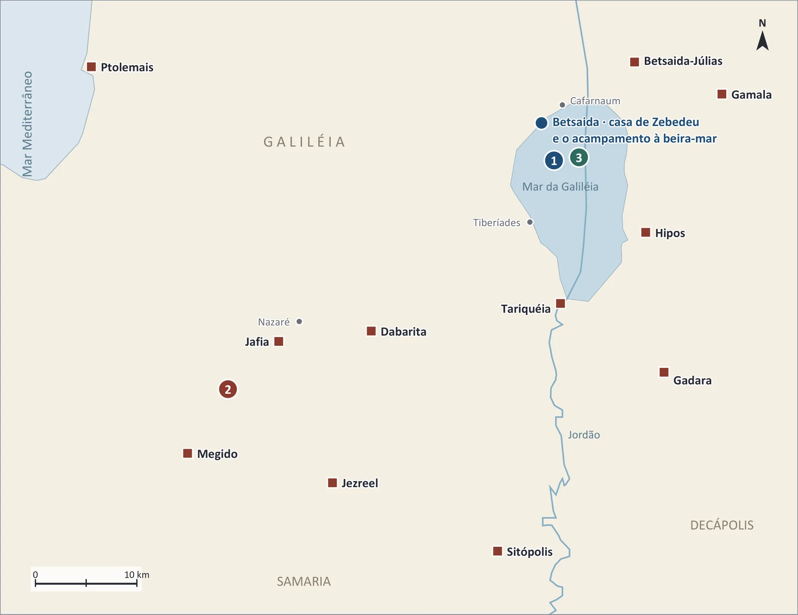
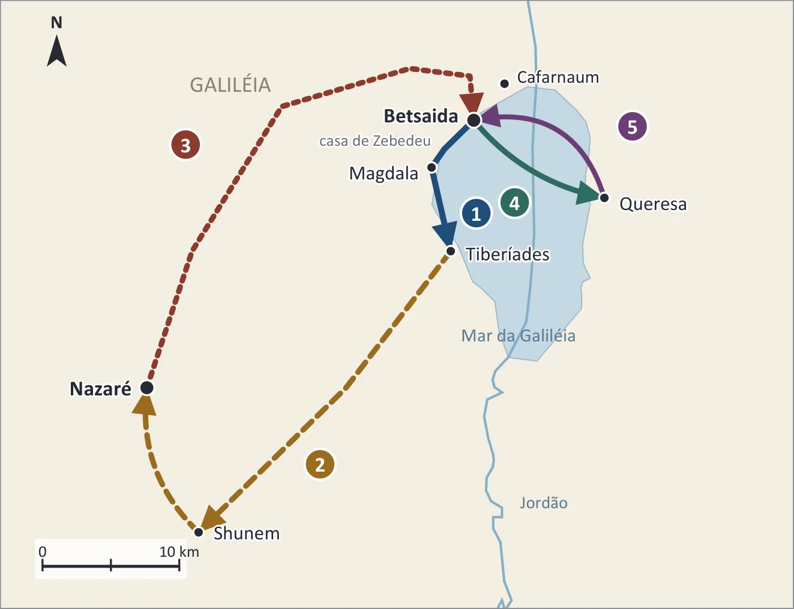

Parte IV O desenrolar do ministério público
Documentos 148–151
Documento 148Preparando os Evangelistas em Betsaídamaio – outubro de 28 d.C.
| Acontecimento | O Livro de Urântia | Bíblia |
|---|---|---|
| Mapa 25O acampamento de Zebedeu e a segunda viagem de pregação pela Galiléiamaio – dezembro de 28 d.C. | ||
| (Introdução)Mapa 25-① A casa de Zebedeu e o acampamento à beira-mar | 148:0.1–5 | Nenhum |
| De 3 de maio a 3 de outubro de 28 d.C., Jesus e os apóstolos residiram na casa de Zebedeu em Betsaida. À beira-mar, um acampamento de tendas que abrigava de quinhentas a mil e quinhentas pessoas funcionava sob a direção de Davi Zebedeu, enquanto Pedro estava encarregado de toda a escola de evangelistas. | ||
| 1. Uma Nova Escola para Profetas | 148:1.1–4 | Nenhum |
| Pedro, Tiago e André selecionavam os candidatos à escola de evangelistas, e os alunos ensinavam ao povo à beira-mar, à tarde, o que tinham aprendido de manhã. Cada apóstolo ensinava a sua própria visão do evangelho, e os mais de cem evangelistas ali treinados forneceram depois o material para a escolha dos setenta. | ||
| 2. O Hospital de Betsaída | 148:2.1–5 | Nenhum |
| Elman, o médico sírio, auxiliado por vinte e cinco moças e doze homens, dirigiu durante quatro meses o primeiro hospital do Reino. Jesus visitava os doentes pelo menos três vezes por semana, e, no entanto, entre os mil que ali se recuperaram, nenhum milagre sobrenatural foi realizado. | ||
| 3. Os Assuntos do Pai | 148:3.1–5 | Nenhum |
| Nesse período Jesus ia muitas vezes às colinas com apenas dois apóstolos e ficava muito tempo sozinho, dizendo que estava “cuidando dos negócios do Pai”. Os narradores deduzem que, nesses períodos de solidão, ele dirigia muitos dos seus diretores principais dos assuntos do universo. | ||
| 4. O Mal, o Pecado e a Iniqüidade | 148:4.1–11 | Nenhum |
| Numa conversa particular no jardim de Zebedeu, Tomé perguntou sobre o mal, e Jesus distinguiu o mal, o pecado e a iniqüidade pelo grau de transgressão da vontade do Pai. Ensinou que o homem não é um ser caído, mas um ser que ascende a Deus, e que a exposição ao mal não torna ninguém pecador. | ||
| 5. O Propósito da Aflição | 148:5.1–5 | Nenhum |
| Quando Natanael perguntou por que o Pai permite que os seus filhos sofram, Jesus explicou que traidores rebeldes haviam perturbado a ordem natural deste mundo. O Pai não aflige propositadamente os seus filhos, ensinou, e muita aflição é produzida pelo pecado e pela iniqüidade. | ||
| 6. O Mal Entendido do Sofrimento —O Discurso sobre Jó | 148:6.1–12 | Nenhum |
| Naquela mesma noite João perguntou por que os inocentes sofrem, e Jesus expôs a história de Jó, mostrando as idéias equivocadas sobre Deus que tinham os seus três amigos. O sofrimento humano não é uma visitação do julgamento divino, disse ele, e Jó, pela fé, encontrou um Deus de conforto e de salvação. | ||
| 7. O Homem da Mão Deformada | 148:7.1–4 | Mt 12:9-14; Mc 3:1-6; Lc 6:6-11 |
| No segundo sábado antes da segunda viagem de pregação, Jesus falou na sinagoga de Cafarnaum e depois curou um homem de mão ressequida que o líder dos espiões fariseus lhe enviara. Foi o seu primeiro milagre em resposta ao desafio dos seus inimigos; os fariseus foram a Herodes, em Tiberíades, mas Herodes recusou-se a agir.Difere da BíbliaOs Evangelhos dizem que os fariseus deliberaram como destruir Jesus, ao passo que O Livro de Urântia acrescenta que o líder dos espiões induziu o homem a vir, que Herodes se recusou a agir e que o homem era pedreiro. | ||
| 8. A Última Semana em Betsaída | 148:8.1–5 | Nenhum |
| Na última semana em Betsaida, Abraão, um jovem membro do sinédrio, foi batizado por Abner, agitando Jerusalém. Kirmet, um profeta de transes de Bagdá, perturbou o acampamento, e Abraão deu todos os seus bens terrenos ao tesouro apostólico, ajudando a enviar os evangelistas. | ||
| 9. Curando os Paralíticos | 148:9.1–4 | Mt 9:1-8; Mc 2:1-12; Lc 5:17-26 |
| Na sexta-feira à tarde, 1º de outubro, durante uma reunião na sala da frente da casa de Zebedeu, um paralítico de Cafarnaum foi descido pelos seus amigos com cordas por entre as telhas do teto. Jesus declarou perdoados os seus pecados e mandou-o levantar-se e andar, e três dos espiões creram e foram batizados por Pedro.Difere da BíbliaOs Evangelhos situam isso numa casa em Cafarnaum (Mateus, “a sua cidade”), ao passo que O Livro de Urântia o situa na casa de Zebedeu em Betsaida e acrescenta que três espiões de Jerusalém foram depois batizados. | ||
Mapa 25O acampamento de Zebedeu e a segunda viagem de pregação pela Galiléia
maio – dezembro de 28 d.C. · Documentos 148–149

- ①A casa de Zebedeu e o acampamento à beira-marDe 3 de maio a 3 de outubro de 28 d.C., Jesus e os apóstolos residiram na casa de Zebedeu em Betsaida. A cidade de tendas à beira-mar contava de quinhentas a mil e quinhentas pessoas; ali funcionava a escola de evangelistas, e a pouca distância ao sul do acampamento ficava a enfermaria de Elman. [148:0.1; 148:1.1; 148:2.1]
- ②A segunda viagem de pregação pública pela GaliléiaDo domingo, 3 de outubro, a 30 de dezembro. Os doze apóstolos e o corpo recém-recrutado de 117 evangelistas trabalhavam em grupos, enquanto Jesus, com Tiago e João, muitas vezes visitava duas cidades num só dia para encorajá-los. Os quadrados marcam as cidades que o texto nomeia; ele não dá nenhuma ordem nem caminho. [149:0.1–3]
- ③Reunião na casa de ZebedeuDavi Zebedeu manteve a sede em Betsaida e enviava mensageiros. Até a hora da ceia da chuvosa quinta-feira, 30 de dezembro, todos os apóstolos e evangelistas haviam chegado à casa de Zebedeu. [149:0.4; 149:7.1]
Documento 149A Segunda Campanha de Pregaçãooutubro – dezembro de 28 d.C.
| Acontecimento | O Livro de Urântia | Bíblia |
|---|---|---|
| (Introdução)Mapa 25-② A segunda viagem de pregação pública pela GaliléiaMapa 25-③ Reunião na casa de Zebedeu | 149:0.1–4 | Nenhum |
| A segunda viagem de pregação pública pela Galiléia começou no domingo, 3 de outubro de 28 d.C., e terminou em 30 de dezembro. Jesus levou consigo apenas Tiago e João e supervisionou os 117 novos evangelistas, enquanto Davi Zebedeu mantinha em Betsaida a sede do seu serviço de mensageiros. | ||
| 1. O Renome de Jesus | 149:1.1–9 | Mt 4:23-25; 12:15-21; Mc 3:7-12; Lc 6:17-19 |
| Quando o acampamento de Betsaida foi desfeito, a fama de Jesus como curador havia se espalhado por toda a Palestina e a Síria. Nessa viagem ele deliberadamente não realizou milagres, mas mais de cem pessoas foram curadas sem que ele tivesse consciência disso, o que os narradores atribuem à fé, à sua compaixão e à vontade do Pai, agindo em conjunto.Difere da BíbliaOs Evangelhos dizem que Jesus curou todos os doentes, ao passo que O Livro de Urântia explica que nessa viagem ele não curou intencionalmente e que as curas ocorreram pela fé sem que Jesus tivesse consciência delas. | ||
| 2. A Atitude do Povo | 149:2.1–14 | Nenhum |
| O narrador observa como os ensinamentos de Jesus foram depois encobertos pela doutrina da expiação e por uma teologia centrada na sua pessoa. Jesus era livre de superstições, designou mulheres como mestras do evangelho e, como evolucionista progressista e não como revolucionário militante, conquistou a confiança e o amor das pessoas. | ||
| 3. A Hostilidade dos Líderes Religiosos | 149:3.1–3 | Nenhum |
| O povo simples acolhia Jesus, mas os líderes religiosos de Jerusalém tornaram-se mais hostis depois da conversão de Abraão e da deserção dos três espiões. Os fariseus tinham uma teologia sistemática, enquanto Jesus ensinava por parábolas, e a partir daí os líderes nunca deixaram de tramar a sua morte. | ||
| 4. O Desenrolar da Campanha de Pregação | 149:4.1–6 | Nenhum |
| Na viagem Jesus manteve aulas noturnas com os crentes em muitas cidades. Quando um jovem evangelista perguntou sobre a raiva, ele a chamou de sinal de que a natureza espiritual não conseguiu controlar a mente e o corpo, e ensinou o caráter equilibrado, mostrando que as virtudes levadas ao extremo se tornam vícios. | ||
| 5. A Lição sobre o Contentamento | 149:5.1–5 | Nenhum |
| Numa conferência noturna dos evangelistas sob a direção de Simão zelote, Simão perguntou sobre o contentamento. Jesus ensinou que a felicidade depende muito da disposição de cada um de ser guiado pelo espírito residente e exortou-os a buscar a certeza da fé e as garantias da filiação divina. | ||
| 6. O “Temor do Senhor” | 149:6.1–12 | Nenhum |
| Numa conferência noturna em Gamala, Filipe perguntou como harmonizar o chamado das Escrituras a temer o Senhor com o ensinamento de Jesus. Jesus disse que os homens devem avançar do medo, pela reverência, até o amor, adorando a Deus não como um rei poderoso a ser temido, mas como um Pai misericordioso. | ||
| 7. Retornando a Betsaída | 149:7.1–3 | Nenhum |
| Por ordem de André, todos os grupos de pregação voltaram à casa de Zebedeu em Betsaida até a quinta-feira, 30 de dezembro. O grupo recebeu um recesso de duas semanas, e dos 117 evangelistas apenas cerca de setenta e cinco resistiram à prova da experiência e estavam prontos para continuar no serviço. | ||
Documento 150A Terceira Campanha de Pregaçãojaneiro – março de 29 d.C.
| Acontecimento | O Livro de Urântia | Bíblia |
|---|---|---|
| Mapa 26A terceira viagem de pregação e a visita a Nazaréjaneiro – março de 29 d.C. | ||
| O começo da terceira viagem de pregaçãoMapa 26-① De Betsaida, na terceira viagem de pregação | 150:0.1–4 | Mt 9:35; Mc 6:6 |
| Em janeiro de 29 d.C., Abner e os apóstolos de João realizaram uma conferência conjunta com os apóstolos de Jesus em Betsaida, mas Jesus recusou-se a tomar parte na discussão sobre a unção dos doentes. Na terça-feira, 18 de janeiro, os vinte e quatro juntaram-se a cerca de setenta e cinco evangelistas para a terceira viagem de pregação pela Galiléia, de sete semanas.Difere da BíbliaOs Evangelhos dizem apenas que Jesus percorria todas as cidades e aldeias, ao passo que O Livro de Urântia especifica que os evangelistas saíram em grupos de cinco e que os companheiros de Abner trabalharam com eles durante quase três semanas. | ||
| 1. O Corpo Evangélico das Mulheres | 150:1.1–3 | Lc 8:1-3 |
| Na tarde de 16 de janeiro, Jesus anunciou que dez mulheres seriam separadas para o trabalho de ministração do Reino. As dez, entre elas Susana, Joana, mulher de Cuza, Marta e Raquel, foram designadas e elegeram Susana como sua chefe e Joana como sua tesoureira; Maria Madalena e Rebeca foram acrescentadas mais tarde.Difere da BíbliaO Evangelho de Lucas diz apenas que mulheres serviam Jesus com os seus bens, ao passo que O Livro de Urântia diz que Jesus separou formalmente dez mulheres como mestras do evangelho e dá o nome de todas as dez e a sua organização. | ||
| 2. A Parada em Magdala | 150:2.1–3 | Nenhum |
| O corpo de mulheres provou pela primeira vez a sua utilidade em Magdala, entrando em lugares de maldade onde os apóstolos dificilmente poderiam ir. Graças ao trabalho de Marta e Raquel, Maria Madalena, que então vivia numa casa de má fama, creu e foi batizada por Pedro, e cerca de quatro semanas depois foi separada para o serviço em Jotapata. | ||
| 3. O Sábado em Tiberíades | 150:3.1–12 | Nenhum |
| Em Tiberíades as mulheres dirigiram o serviço de sábado do grupo apostólico, conduzido por Joana na sala de banquetes do novo palácio de Herodes. Naquela noite, respondendo à pergunta de André sobre uma nova estrela, Jesus rejeitou toda superstição, inclusive a astrologia, os amuletos, a adivinhação, a interpretação de sonhos e os ídolos. | ||
| 4. Enviando os Apóstolos, Dois a Dois | 150:4.1–4 | Mt 9:36-38; 10:1-42; 11:1; Mc 6:7-13; Lc 9:1-6; 12:2-9 |
| Na noite seguinte Jesus disse que a seara era grande, mas os trabalhadores eram poucos, e enviou os doze, dois a dois, por toda a Galiléia. Não deviam ir às cidades dos gentios nem a Samaria, mas às ovelhas perdidas da casa de Israel, e voltariam a encontrar-se em Nazaré.Difere da BíbliaOs Evangelhos dizem que Jesus deu poder para expulsar espíritos impuros e curar, com instruções sobre o que levar, ao passo que O Livro de Urântia não traz tal concessão de poder nem tais instruções e enumera as duplas de apóstolos. | ||
| Dois pardais | 150:4.3 | Mt 10:29-31; Lc 12:6-7 |
| Jesus encorajou-os dizendo que nem mesmo dois pardais são esquecidos por Deus e que os cabelos das suas cabeças estão contados, de modo que não precisavam temer. Como a rejeição do evangelho dividiria as famílias, deviam esforçar-se por salvar famílias inteiras; contudo, quem ama os pais mais do que o evangelho não é digno do Reino.Difere da BíbliaMateus diz que Jesus não veio trazer a paz, mas a espada, ao passo que O Livro de Urântia diz que ele veio trazer a paz, que a divisão vem quando ela é rejeitada, e exorta a salvar a família inteira. | ||
| 5. O Que Devo Fazer para me Salvar?Mapa 26-② Por Shunem a Nazaré | 150:5.1–5 | Nenhum |
| Em Shunem, Raquel perguntou como responder às mulheres que perguntam o que devem fazer para se salvar, e Jesus disse: crer no evangelho e aceitar o perdão divino. A salvação é dom de Deus, ensinou, e a vida reta é o fruto da vida de filiação nascida do espírito. | ||
| 6. As Lições da Noite | 150:6.1–3 | Nenhum |
| Durante o restante da viagem, Jesus passou de grupo em grupo, falando cada noite sobre temas como o amor de Deus, os sonhos e as visões, e a humildade e a mansidão. Todos os grupos se reuniram na sexta-feira, 4 de março, num acampamento nas terras altas ao norte de Nazaré. | ||
| 7. A Permanência em Nazaré | 150:7.1–4 | Nenhum |
| Na sexta-feira à tarde, 4 de março, Jesus caminhou por Nazaré sem ser reconhecido por ninguém, passando pela casa da sua infância, pela oficina de carpintaria, pela colina e pela sinagoga. O povo de Nazaré ressentia-se de que ele não tivesse feito grandes obras na sua cidade natal, e os seus inimigos haviam contratado homens grosseiros para provocar desordem no serviço do sábado. | ||
| 8. O Serviço do SábadoMapa 6-④ A sinagogaMapa 26-③ Rejeitado em Nazaré, de volta a Betsaida | 150:8.1–11 | Mt 13:54-58; Mc 6:1-6; Lc 4:16-30 |
| Na manhã do sábado, o serviço da sinagoga de Nazaré foi conduzido à maneira antiga, e Jesus leu do Deuteronômio e de Isaías no rolo que ele mesmo havia doado outrora. Declarou: “Hoje estas escrituras estão cumpridas”, falou durante quase quinze minutos sobre os filhos e filhas de Deus e depois desceu para o meio da multidão que o questionava.Difere da BíbliaO Evangelho de Lucas diz que Jesus leu apenas de Isaías, ao passo que O Livro de Urântia diz que ele leu primeiro do Deuteronômio, falou sobre os filhos e filhas de Deus e que homens contratados procuraram causar tumulto. | ||
| 9. A Rejeição de Nazaré | 150:9.1–5 | Mt 13:54-58; Mc 6:1-6; Lc 4:16-30 |
| Quando os seus inimigos zombaram dele, Jesus respondeu que um profeta não tem honra na sua própria terra. O desastrado gesto militante de Simão zelote inflamou a turba, que tentou empurrar Jesus de um penhasco, mas, quando ele se voltou e os encarou de braços cruzados, a multidão abriu caminho. O grupo voltou a reunir-se em Betsaida em 10 de março.Difere da BíbliaO Evangelho de Lucas diz que a multidão se enfureceu com as histórias de Elias e Eliseu, ao passo que O Livro de Urântia omite essas histórias e diz que o desastre de Simão zelote e os homens contratados provocaram o tumulto. | ||
Mapa 26A terceira viagem de pregação e a visita a Nazaré
janeiro – março de 29 d.C. · Documentos 150–152

- ①De Betsaida, na terceira viagem de pregaçãoNa terça-feira, 18 de janeiro de 29 d.C., os evangelistas aprovados juntaram-se aos vinte e quatro na casa de Zebedeu para se prepararem para uma missão de sete semanas. Visitaram Magdala, Tiberíades, Nazaré e as cidades e aldeias da Galiléia central e meridional. Em Magdala as mulheres evangelistas demonstraram pela primeira vez a sua utilidade. [150:0.3–4; 150:2.2]
- ②Por Shunem a NazaréCerta noite em Shunem, depois que os apóstolos de João haviam voltado a Hebrom, Jesus ensinou. Todos deviam reunir-se em Nazaré na sexta-feira, 4 de março (a ordem e o caminho das paradas não estão no texto; tracejado). [150:5.1; 150:6.3]
- ③Rejeitado em Nazaré, de volta a BetsaidaNo sábado ele falou na sinagoga de Nazaré e foi rejeitado. Partindo na manhã de domingo por caminhos diferentes, todos se reuniram em Betsaida até o meio-dia de quinta-feira, 10 de março. [150:8.1; 150:9.1–5]
- ④Através do lago até QueresaAtravessando no domingo à tarde, foram surpreendidos por uma súbita tempestade de vento. Na manhã seguinte, perto do cemitério da aldeia de Queresa, Amós, o lunático, foi curado. [151:5.1–7; 151:6.2–5]
- ⑤De volta a BetsaidaDepois de uma única noite de descanso, cedo na manhã de terça-feira os gentios criadores de porcos insistiram para que partissem. Desembarcando naquela terça-feira antes do meio-dia, Jesus despertou a filha de Jairo. [151:6.7; 152:0.1; 152:1.1–2]
Documento 151Os Ensinamentos e a Permanência à Beira-Marmarço de 29 d.C.
| Acontecimento | O Livro de Urântia | Bíblia |
|---|---|---|
| (Introdução) | 151:0.1–2 | Nenhum |
| Em 10 de março todos os grupos de pregação haviam se reunido em Betsaida, e Jesus passou a maior parte do sábado sozinho nas colinas. Naquele sábado à noite falou por mais de uma hora sobre a missão da adversidade e o valor espiritual da decepção, ainda entristecido pela sua rejeição em Nazaré. | ||
| 1. A Parábola do Semeador | 151:1.1–5 | Mt 13:1-17; Mc 4:1-12; Lc 8:4-10 |
| Num domingo de manhã, sentado num velho barco de pesca à beira-mar, Jesus usou parábolas pela primeira vez, contando a uma multidão de cerca de mil pessoas a história do semeador. Naquela noite Mateus perguntou por que ele falava em parábolas, e Jesus respondeu que os que desejam a verdade entenderiam, enquanto os seus inimigos ficariam confundidos.Difere da BíbliaOs Evangelhos relatam apenas o ensinamento de um barco à beira-mar, ao passo que O Livro de Urântia diz que foi então que Jesus começou o método das parábolas e que Mateus fez a sua pergunta naquela noite, no jardim de Zebedeu. | ||
| 2. A Interpretação da Parábola | 151:2.1–8 | Mt 13:18-23; Mc 4:13-20; Lc 8:11-15 |
| Pedro e Natanael interpretaram a parábola do semeador de modos diferentes, atribuindo significados espirituais a cada pormenor, e os apóstolos dividiram-se em dois campos. Tomé disse que uma parábola ensina uma única grande verdade, aqui a de que os resultados da ministração variam conforme as condições, e Jesus reconheceu que Tomé discernira o seu verdadeiro significado.Difere da BíbliaNos Evangelhos é o próprio Jesus que interpreta a parábola pormenor por pormenor, ao passo que em O Livro de Urântia essa interpretação é de Pedro; Jesus adverte contra transformar as parábolas em alegorias e aprova a visão de Tomé. | ||
| 3. Mais a Respeito das Parábolas | 151:3.1–16 | Mc 4:21-25; Lc 8:16-18 |
| Na noite seguinte Jesus ensinou-os a adaptar o seu ensino aos ouvintes, falando de pôr a lâmpada no candelabro, e explicou como as parábolas plantam a verdade evitando o preconceito. No fim acrescentou, como última parte da parábola do semeador, a história da semente que cresce por si mesma até a colheita.Difere da BíbliaNos Evangelhos os ditos sobre a lâmpada e as coisas ocultas vêm logo depois da interpretação da parábola, ao passo que O Livro de Urântia os situa na aula da noite seguinte sobre o valor das parábolas. | ||
| 4. Mais Parábolas à Beira-Mar | 151:4.1–7 | Mt 13:24-53; Mc 4:26-32; Lc 13:18-21 |
| No dia seguinte Jesus voltou a ensinar a multidão do barco, contando as parábolas do trigo e do joio, do grão de mostarda, do fermento, do tesouro escondido no campo, da pérola de grande valor e da rede de arrasto. Dali em diante ensinou as massas quase só por parábolas, explicando-as mais plenamente aos apóstolos e evangelistas nas aulas da noite.Difere da BíbliaMateus interpreta as parábolas do joio e da rede como o julgamento no fim do mundo, ao passo que O Livro de Urântia não dá tal interpretação e apresenta apenas as parábolas. | ||
| 5. A Visita a QueresaMapa 26-④ Através do lago até Queresa | 151:5.1–7 | Mt 8:18, 23-27; Mc 4:35-41; Lc 8:22-25 |
| Cansado das multidões, Jesus partiu através do lago com os seus apóstolos no domingo à tarde, e ao anoitecer uma súbita ventania encheu o barco de água, de modo que Pedro o acordou. Quando Jesus disse: “Paz, acalmai-vos”, a tempestade amainou, o que os narradores consideram uma coincidência.Difere da BíbliaOs Evangelhos dizem que Jesus repreendeu o vento e o mar e os acalmou, ao passo que O Livro de Urântia diz que ele falou às mentes perturbadas dos apóstolos e que o fim da tempestade foi uma coincidência. | ||
| 6. O Lunático de QueresaMapa 26-⑤ De volta a Betsaida | 151:6.1–8 | Mt 8:28-34; Mc 5:1-20; Lc 8:26-39 |
| Amós, um lunático que vivia nas cavernas de sepulcros perto de Queresa, caiu aos pés de Jesus, e Jesus disse-lhe que não estava possuído por um demônio e ordenou-lhe que saísse do seu transe, restaurando-lhe a mente. Enquanto isso, cães levaram uma vara de porcos a despencar de um precipício, dando origem à lenda de que os demônios entraram nos porcos, e os aldeões pediram a Jesus que partisse.Difere da BíbliaOs Evangelhos dizem que os demônios entraram nos porcos e que a vara pereceu, ao passo que O Livro de Urântia diz que os cães apenas fizeram correr uns trinta porcos e que Amós tinha uma aflição mental, não uma possessão. Mateus fala de dois homens. | ||
← Parte III João Batista, a preparação e o treinamento dos apóstolosParte V Os últimos meses do ministério público →
Os atos de Jesus em O Livro de Urântia — O Novo Testamento e O Livro de Urântia